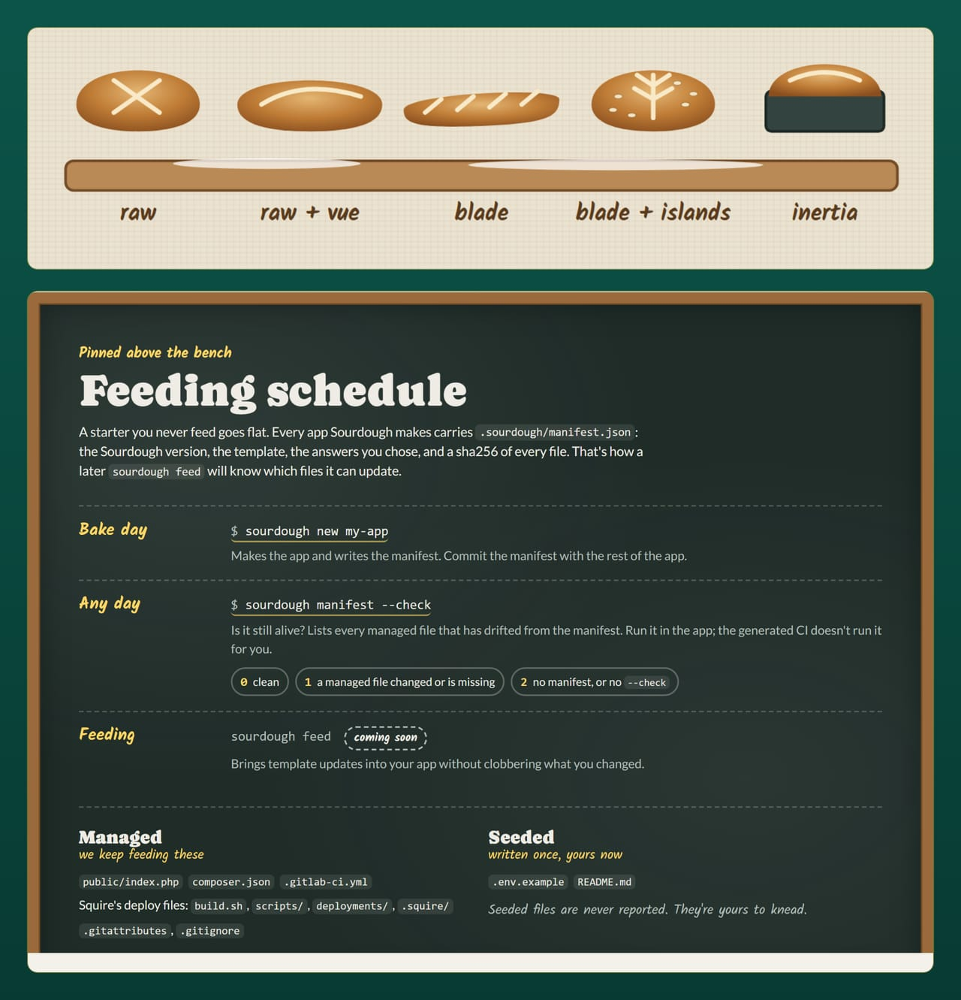
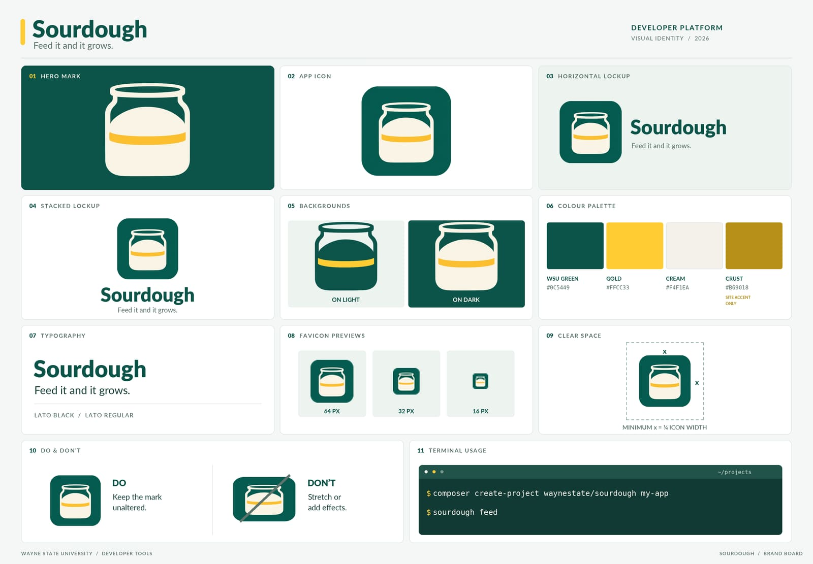

CI#
Sourdough's pipelines run one gate, composer ci, on both forges: the same command on GitLab and GitHub. This page covers what each pipeline runs, what green means, and where the pipelines should run. For what the gate contains, continue to Testing.
On GitLab#
Preflight's php-test (PHP 8.3, 8.4, 8.5) and composer-audit components, plus a composer-ci job. The raw shapes add the proctor component; the Laravel shapes run PROCTOR in a proctor-root job (composer proctor, which is proctor check). Every shape also includes three gates, sbom, secret-detection and a11y, and ships a .deploy template for deploy jobs; they are described below. Every include is pinned to the Preflight 0.4.0 release commit (87d9b6fc6b0ed302dd729986525282cd7b567ebd), with the tag in a trailing comment.
The accessibility gate#
Every shape's pipeline checks the app's own pages in a real browser (BEST_PRACTICES 6.4). Two jobs share the work, so the checking stays Preflight's:
a11y-pagesboots the app the way its first run on a desk does, with SESAME's fake driver: PHP's built-in server for the raw shapes,php artisan serve(after.env, a key and an SQLite database) for the Laravel shapes. The shapes with a front end wait for thefrontendjob (needs: [frontend]) and serve its build. The job copiespublic/'s static files (never its PHP) intoa11y-site/and saves each path inA11Y_PATHSthere as<path>/index.html, through one cookie jar, so a page behind sign-in is saved signed in. The server's own origin is cut out of the saved pages, so their links work on any port.A11Y_DATA(raw + Vue only:/api/me) saves the JSON the page fetches as it loads, so the Vue app draws its signed-in view.- Preflight's
a11ycomponent (site_dir: a11y-site,needs: [a11y-pages]) opens each page in Chromium with axe-core, light and dark, at 320 and 1280 px, plus the WCAG 1.4.10 reflow check, at WCAG 2.2 AA (WayneUI's floor; the ADA Title II rule names 2.1 AA, which 2.2 AA includes). It blocks: a violation fails the pipeline.
| Shape | A11Y_PATHS |
What it covers |
|---|---|---|
| Raw PHP | / |
the one page, signed in by the fake driver |
| Raw PHP + Vue SPA | / (and /api/me in A11Y_DATA) |
the Vue app with the signed-in user |
| Laravel + Blade, Blade + Vue islands, Inertia | / /dashboard |
the home page signed out, then the dashboard after /login signs in |
In production the sign-in page is the CAS server's own, so the part of the sign-in flow an app draws is the signed-in page it lands on. An app owner adds each new page to A11Y_PATHS and to the a11y include's pages (the two lists name the same pages; tests/TemplateCiGatesTest.php holds the templates to that). Every shape renders pages, so every shape gets the gate; an app that later becomes a pure JSON API with no pages can drop the a11y include and the a11y-pages and a11y jobs together.
The npm install and audit#
The shapes with a front end (raw + Vue, Blade + Vue, Inertia) ship a package-lock.json, written against the template's package.json with npm's one-day release cooldown honored, so a fresh app's first pipeline installs exactly what Sourdough tested (BEST_PRACTICES 4.10). The frontend job runs npm ci --ignore-scripts, which installs the lock as it is, runs no package's install script, and stops when package.json and the lock disagree, then npm audit --audit-level=high --omit=dev, which fails the job on a high or critical advisory in a runtime dependency (moderate and low ones are listed, not fatal), then a second npm audit that lists every finding, dev tools included, and never fails. The lock is seeded: after the bake it is yours, and npm writes it. Change a dependency with npm install and commit package.json and package-lock.json together. A package that truly needs its install script (a native addon, a binary download) gets an npm rebuild <name> line after npm ci, by name, so nothing else runs one.
The bill of materials#
Preflight's sbom component writes sbom.cdx.json, a CycloneDX SBOM of the Composer packages composer.lock installs (dev packages left out), and keeps it for 30 days (BEST_PRACTICES 4.15). The shapes with a front end add the npm half in their frontend job: @cyclonedx/cyclonedx-npm, the CycloneDX project's own tool, pinned to an exact version and run with --ignore-scripts, writes sbom-npm.cdx.json from what the install put in node_modules, dev packages included, because the build tools make the bundle. npm's built-in npm sbom refuses a package.json without a version, which an app's never has. When the next advisory lands, the affected apps are one search per file away. Container image contents are not covered: the shapes build no image in CI.
Secrets and deploy credentials#
Preflight's secret-detection component runs Gitleaks over the checkout and fails on anything shaped like a credential, redacted in the log and in gitleaks.json. A freshly baked app of every shape scans clean.
Citadel deploys an app with a Quick Update, so a baked pipeline holds no deploy credential and runs no deploy job (BEST_PRACTICES 6.5). Each shape ships the part a pipeline file can express, a hidden .deploy template for the day an app adds a deploy job:
.deploy:
stage: deploy
resource_group: deploy
interruptible: false
rules:
- if: $CI_PIPELINE_SOURCE == "merge_request_event"
when: never
- if: $CI_COMMIT_REF_PROTECTED == "true"
A job that extends it never runs for a merge request and runs only on a protected branch or tag, the only refs where GitLab hands a job its protected variables. One deploy runs at a time, and a newer pipeline never cancels one halfway. tests/TemplateCiGatesTest.php fails Sourdough's suite when a shape's job deploys (stage: deploy or environment:) without extending .deploy, when a component input references any variable but the GitLab host and IMAGE_PREFIX, or when the file sets a variable named like a credential.
The rest are project settings, so each generated README lists them under "Pipeline": protect main and the release tags; keep each deploy credential in a protected, masked (or masked and hidden) variable; never put a credential in the file or a component's inputs; keep the job token allowlist on and add other projects by name; read a fork's merge request before running its pipeline in the project; prefer the deploy target's own secret store for anything long-lived. All of it works on GitLab Community Edition. Protected environments, which would add an approval step, are a paid tier feature, so the file does not rely on them.
Is the app still fed?#
Every shape also ships a sourdough-feed job. It installs the newest Sourdough release (composer create-project waynestate/sourdough) on the shape's own composer image, through ${IMAGE_PREFIX} and on the .composer-cache, and runs two checks against the app's manifest:
sourdough manifest --checklists the managed files edited since the last bake or feed. Drift is normal (feed merges it), so the list is a report and never fails the job.sourdough feed --dry-runexits1when a newer release has template changes the app has not fed. The job exits1too, andallow_failure: exit_codes: [1]turns that into a warning: a pending feed never blocks a deploy.
Exit 2 from either (no manifest, a manifest from a newer Sourdough, conflict markers left over from the last feed, a bake that failed) fails the job, because the app's record needs fixing before any feed can run. The full table and the job itself are in Keeping apps current.
An app sourdough adopt took in has the job only if its .gitlab-ci.yml came from the template: when the app had none, the first feed adds the shape's whole file, job included. When the app keeps a .gitlab-ci.yml of its own (yours in the manifest), copy the sourdough-feed job by hand from a fresh bake of the same shape, with the .composer-cache template and the IMAGE_PREFIX variable it leans on: see Your own .gitlab-ci.yml. The job's answers mean the same on an adopted app, and yours files never turn it yellow.
Dependency caching#
A pipeline that downloads every image and package on every run can get the runner's address rate limited by Docker Hub, and a busy afternoon of fifty jobs can look like abuse. Every shape's .gitlab-ci.yml keeps those downloads cached, so a fed starter does not go asking the neighbors for flour.
Images. Each job's image is ${IMAGE_PREFIX}/<image>, digest pins kept. IMAGE_PREFIX defaults to docker.io, and a workflow: rule sets it to the group's GitLab Dependency Proxy ($CI_DEPENDENCY_PROXY_GROUP_IMAGE_PREFIX) when the GitLab has one. The runner signs in to the proxy on its own; the proxy asks Docker Hub once and serves its copy after that. The Preflight components (0.3.0 and later) put a prefix in front of their own default images themselves, through their image_prefix input; every shape hands them image_prefix: "${IMAGE_PREFIX}", so components and jobs follow the same rule. The shapes pass no image input, so each component runs the default image its pinned release carries, pinned by digest.
workflow:
rules:
- if: $CI_DEPENDENCY_PROXY_GROUP_IMAGE_PREFIX
variables:
IMAGE_PREFIX: $CI_DEPENDENCY_PROXY_GROUP_IMAGE_PREFIX
- when: always
variables:
IMAGE_PREFIX: docker.io
On a group whose proxy is turned off, set IMAGE_PREFIX to docker.io in Settings > CI/CD > Variables: a project variable beats the file's own.
Packages. COMPOSER_CACHE_DIR and npm_config_cache point at .cache/composer/ and .cache/npm/ inside the project, and every job that installs extends .composer-cache (keyed on composer.lock) or .npm-cache (keyed on package-lock.json and package.json). A lock change starts a fresh cache, and the install still resolves from the lock, so a cached run never gets a stale package.
The a11y component pulls Microsoft's Playwright image from mcr.microsoft.com, which the Dependency Proxy does not front, so it takes no image_prefix; the runner's own image cache is what keeps that pull rare.
tests/TemplateCiCacheTest.php fails Sourdough's own suite when a shape's own job gains an image without ${IMAGE_PREFIX}/ or an install without its cache, and tests/PreflightPinTest.php fails it when a shape pins another Preflight version than the rest, gives a component a prefixed image, or leaves out image_prefix.
On GitHub#
.github/workflows/ci.yml calls Preflight's reusable workflow with composer ci, pinned to Preflight 0.1.4: GitHub's copy of Preflight has no later tag yet, so the GitHub side stays there while GitLab runs 0.4.0.
What green means#
Green means composer ci passed on all three PHP versions on both.
The smoke jobs on CI#
On CI the smoke gate runs as one job per shape: smoke (matrix) on GitHub, smoke-raw, smoke-raw-vue, smoke-blade, smoke-blade-vue and smoke-inertia on GitLab. All are allow_failure: true until the lead has seen every shape green on CI once; flip them to blocking after that proof. The full recipe is in Testing.
The proof job runs the whole proof harness on GitLab: every shape and every oven, with the last release fed forward, and keeps the Last run table and every step log as an artifact. It never runs on a push: start it by hand from any pipeline, or from a pipeline schedule that sets SOURDOUGH_PROOF to 1.
On the bench#

The recipe card#
